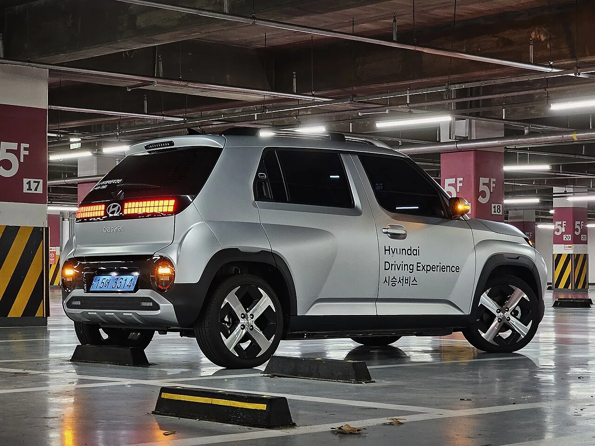
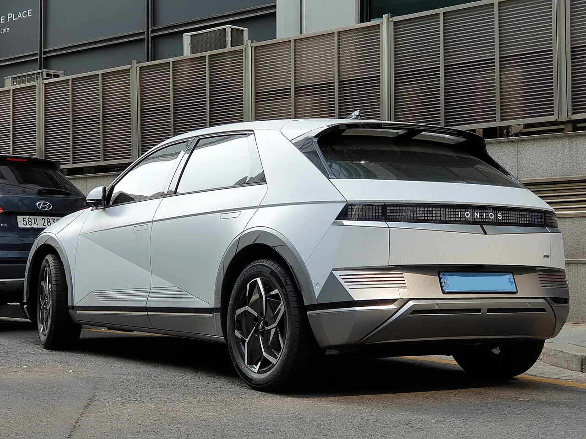
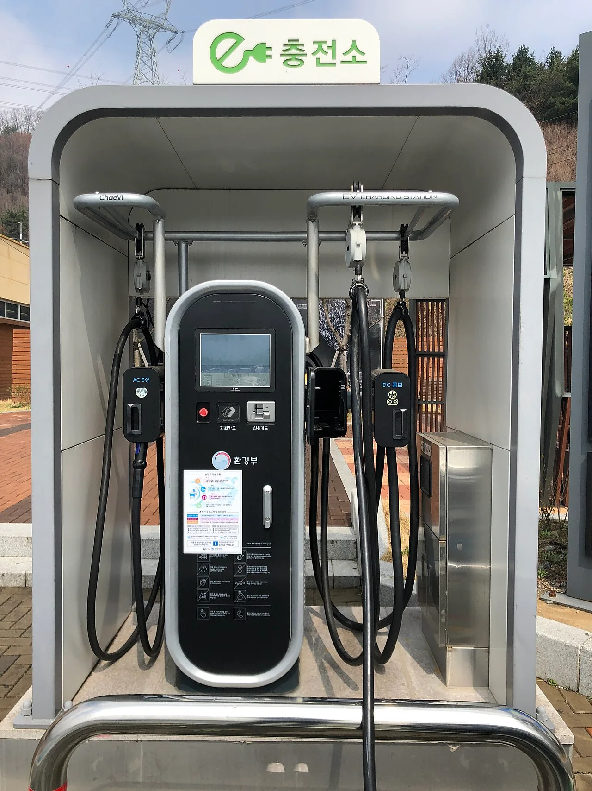

▲ 소용량 배터리를 탑재해 상대적으로 저렴한 가격에 출시된 현대 캐스퍼 일렉트릭. 초기 구매가는 낮지만 장기 보유 시 고려할 점이 많다
1. "400만원 아꼈다"... 소용량 배터리가 매력적이었던 이유
전기차 구매를 고민하는 소비자들에게 소용량 배터리 트림은 꽤 매력적인 선택지로 다가온다. 같은 차종이라도 배터리 용량을 낮추면 차량 가격을 400만~500만원가량 낮출 수 있기 때문이다. 보조금 문턱을 넘기 위해, 혹은 단순히 초기 부담을 줄이기 위해 소용량 배터리를 택하는 소비자가 적지 않다. 문제는 이 선택이 몇 년 뒤 예상치 못한 대가로 돌아올 수 있다는 점이다.
도심 단거리 출퇴근 용도로만 차를 쓴다면 큰 문제가 없을 수 있지만, 장거리 주행이 잦거나 오래 탈 계획이라면 이야기가 달라진다. 실제 데이터로 확인된 소용량 배터리의 약점을 짚어봤다.

▲ 소용량 배터리 트림을 갖춘 현대 캐스퍼 일렉트릭. 구매가는 낮출 수 있지만 장기 보유 시 열화 속도를 고려해야 한다 ⓒ 현대자동차
2. 배터리가 작을수록 더 혹사당하는 이유
소용량 배터리는 같은 거리를 주행하는 동안 대용량 배터리보다 훨씬 더 많은 충방전 사이클을 소화해야 한다. 80kWh급 대용량 배터리로 15만km를 주행하면 완충-완방 사이클이 약 350~400회 발생하는 반면, 40kWh급 소용량 배터리는 같은 거리에서 750~800회 이상의 사이클을 겪는다. 배터리 셀이 물리적으로 피로해지는 속도가 2배 이상 빠르다는 뜻이다.
고부하 스트레스도 문제다. 동일한 100kW급 모터 출력을 낼 때 80kWh 팩은 1.25C 수준으로 방전하지만, 40kWh 팩은 2.5C에 달하는 고부하 방전을 감당해야 한다. 이 과정에서 셀 내부 발열과 저항이 급증하고, 음극 표면 손상(리튬 석출)과 전해액 분해가 더 빠르게 진행된다는 것이 배터리 진단 업계의 설명이다.
3. 실측 데이터로 확인된 격차 — 닛산 리프 vs 아이오닉5
글로벌 배터리 진단 기업 아빌루(AVILOO)가 50만 건 이상의 데이터를 분석한 결과는 이 격차를 숫자로 보여준다. 40kWh 배터리를 탑재한 닛산 리프(ZE1)는 누적 주행 5만km 시점부터 배터리 잔존수명(SoH)이 91.1%로 떨어지기 시작했고, 15만km에는 86.3%까지 하락했다. 신차 당시 200km대 중반이던 실주행거리도 180km대로 눈에 띄게 줄었다.
반면 72.6kWh 대용량 배터리와 수랭식 열관리 시스템을 갖춘 현대 아이오닉5는 15만km 주행 후에도 92.8%의 SoH를 유지했다. 같은 거리를 달렸는데도 배터리 건강 상태에서 6%p 이상 차이가 벌어진 셈이다.

▲ 대용량 배터리와 수랭식 열관리 시스템을 갖춘 아이오닉5의 전면 디테일 ⓒ 현대자동차
| 구분 | 소용량(40kWh급, 닛산 리프) | 대용량(72.6kWh급, 아이오닉5) |
|---|---|---|
| 완충-완방 사이클 | 750~800회 이상 | 350~400회 |
| 동일 출력 시 방전 부하 | 약 2.5C(고부하) | 약 1.25C |
| 냉각 방식 | 공랭식 등 단순 냉각 구조 | 액체 냉각(수랭식) |
| 15만km 후 SoH | 86.3% | 92.8% |
| 구매 시 절감액 | 약 400만~500만원 | - |

▲ 72.6kWh 대용량 배터리와 수랭식 열관리를 갖춘 현대 아이오닉5는 15만km 주행 후에도 92.8%의 SoH를 유지했다 ⓒ Wikimedia Commons
📍 SoH(State of Health, 배터리 잔존수명)란
SoH는 배터리가 신품 대비 얼마나 성능을 유지하고 있는지를 백분율로 나타낸 지표다. SoH 100%는 신품 상태를, SoH가 낮아질수록 배터리의 실제 사용 가능 용량과 출력이 줄어든다는 뜻이다. 배터리관리시스템(BMS)은 SoH가 일정 수준 이하로 떨어지면 급속충전 속도를 강제로 제한하는 등 배터리 보호 모드에 들어가기도 한다.
4. 충전 횟수 증가, 그리고 중고차 가치 폭락
배터리 용량이 작으면 한 번 충전으로 갈 수 있는 거리가 짧아 충전 횟수 자체가 늘어나고, 이는 다시 추가적인 배터리 노화로 이어지는 악순환을 만든다. 배터리 잔존용량이 70~80% 이하로 떨어지면 급가속 시 눈에 띄는 전압 강하가 발생하고, BMS가 급속충전 속도를 강제로 제한하는 '수명 종료(EOL)' 단계에 가까워진다. 겨울철에는 이런 증상이 더욱 두드러져, 안내된 주행가능거리와 실제 주행거리의 괴리를 체감하는 운전자가 많다.
더 뼈아픈 대목은 중고차 시장이다. 배터리는 중고 전기차 잔존가치의 절반 이상을 결정짓는 핵심 고가 부품이다. 구매 당시 소용량 배터리로 아낀 400만~500만원은, 5년 이상 장기 보유하거나 중고로 되팔 때 배터리 열화에 따른 감가상각 폭탄으로 되돌아올 수 있다는 것이 업계의 지적이다.

▲ 40kWh 소용량 배터리를 탑재한 닛산 리프(ZE1). 실측 데이터에서 대용량 배터리 모델보다 빠른 열화 속도가 확인됐다 ⓒ Wikimedia Commons

▲ 소용량 배터리 전기차는 주행가능거리가 짧아 충전소를 찾는 빈도 자체가 늘어난다 ⓒ Wikimedia Commons
5. 후회하지 않으려면... 구매 전 체크포인트
결국 관건은 가격표가 아니라 '나의 운행 패턴'이다. 도심 단거리 출퇴근 위주로만 차량을 쓰고 짧은 보유 기간 후 처분할 계획이라면 소용량 배터리도 합리적인 선택이 될 수 있다. 반대로 장거리 주행이 잦거나 5년 이상 오래 탈 계획이라면, 초기 구매가가 다소 높더라도 대용량·수랭식 배터리를 택하는 편이 총소유비용(TCO) 관점에서 유리하다는 것이 전문가들의 공통된 조언이다. 관련 내용은 오토헤럴드 기사에서 확인할 수 있다. 바로가기
✅ 소용량 배터리 전기차, 구매 전 이것만은 확인하세요
· 소용량 배터리는 동일 거리 주행 시 충방전 사이클이 2배 이상 많아 열화가 빠름
· 40kWh급 리프는 15만km 시점 SoH 86.3%, 72.6kWh급 아이오닉5는 92.8%
· 냉각 방식(공랭 vs 수랭)이 장기 내구성을 크게 좌우
· 도심 단거리·단기 보유라면 소용량도 합리적, 장거리·장기 보유라면 대용량 권장
· 중고 판매 계획이 있다면 배터리 용량이 잔존가치에 미치는 영향을 반드시 검토
6. 정리
소용량 배터리 전기차는 눈앞의 가격표만 보면 합리적인 선택처럼 보이지만, 실제로는 더 많은 충방전 사이클과 고부하 스트레스를 견뎌야 해 열화 속도가 대용량 모델보다 최대 2배 이상 빠르다. 닛산 리프와 아이오닉5의 실측 SoH 비교는 이 차이를 명확한 숫자로 보여준다. 400만~500만원을 아끼려다 중고차 시세에서 그 이상을 잃을 수 있는 만큼, 자신의 운행 패턴과 보유 계획을 먼저 따져보는 것이 후회 없는 전기차 구매의 첫걸음이다.